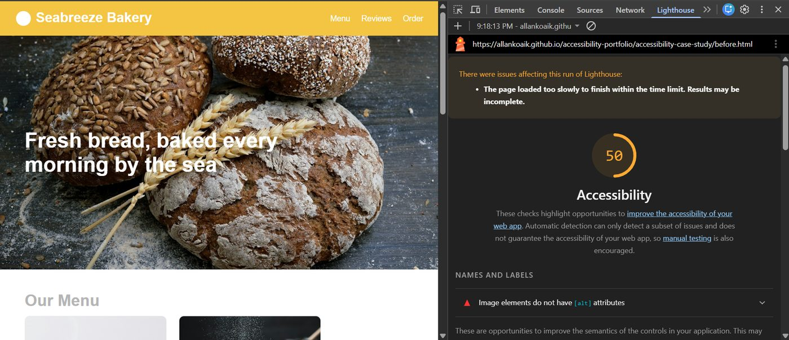
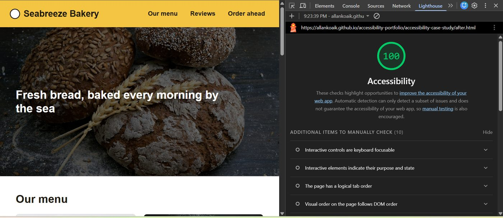
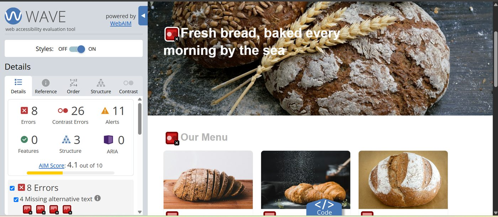
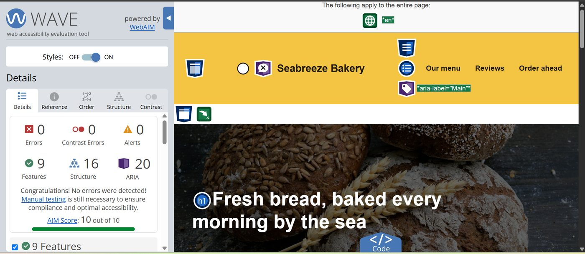

Try both versions
Open each page and try using it with only your keyboard (Tab, Shift+Tab, Enter) or a screen reader. The difference is easy to feel.
Results
50 → 100Lighthouse accessibility score
8 → 0WAVE errors (plus 26 → 0 contrast errors)
1.6:1 → 6.3:1Worst text contrast ratio (minimum is 4.5:1)
Test results: before and after




Want the full write-up? Read the sample accessibility audit report for this site.
What I found and fixed
| Problem | Who it affected | Fix | WCAG |
|---|---|---|---|
| Grey and yellow text failed contrast (as low as 1.6:1) | People with low vision, anyone outdoors on a phone | New colour palette; all text now at least 6.3:1 (minimum is 4.5:1) | 1.4.3 |
| White hero text over a busy photo | People with low vision | Dark overlay behind the headline | 1.4.3 |
| Product photos had no alt text | Screen reader users | Descriptive alt text; decorative logo hidden from screen readers | 1.1.1 |
| No page language or meaningful title | Screen reader users, search engines | Added lang="en" and a descriptive <title> | 3.1.1, 2.4.2 |
"Buttons" and menu links were clickable <div>s | Keyboard and screen reader users couldn't reach or use them | Replaced with real <button> and <a> elements | 2.1.1, 4.1.2 |
Focus outline removed (outline: none) | Keyboard users couldn't see where they were | Clear 3px focus ring on every interactive element | 2.4.7 |
| Mobile menu icon wasn't a button and didn't report its state | Keyboard and screen reader users on mobile | Labelled button with aria-expanded, closes with Escape | 4.1.2 |
Headings were styled <div>s; levels skipped | Screen reader users navigating by heading | Logical h1 → h2 → h3 structure and landmarks | 1.3.1 |
| No way to skip the navigation | Keyboard users | "Skip to main content" link | 2.4.1 |
| Form fields used placeholders instead of labels | Screen reader users, people with memory difficulties | Visible <label>s, hints and autocomplete | 1.3.1, 3.3.2, 1.3.5 |
| Errors shown only as a red border and the word "Error" | Colour-blind and screen reader users | Specific error text linked to each field, plus a focused error summary | 1.4.1, 3.3.1, 3.3.3 |
| Reviews rotated automatically with no pause | People with attention or reading difficulties | Pause, Previous and Next buttons; respects reduced-motion settings | 2.2.2 |
| "Click here" link text | Screen reader users scanning links | Descriptive link text | 2.4.4 |
| Pinch-zoom disabled; 13px text | People with low vision | Zoom allowed; 16px base text that scales | 1.4.4 |
Pop-up alert() when adding to order | Interrupts everyone, confuses screen readers | Polite status message announced by screen readers | 4.1.3 |
| Small click targets in the menu | People with motor difficulties, touchscreen users | All targets at least 44×44px | 2.5.8 |
How I tested
- Lighthouse
- WAVE
- axe DevTools
- Keyboard-only testing
- NVDA screen reader
- Mobile and 200% zoom checks
Need this for your site?
I audit and fix accessibility issues on HTML, WordPress, Shopify and Wix sites. Hire me on Upwork.